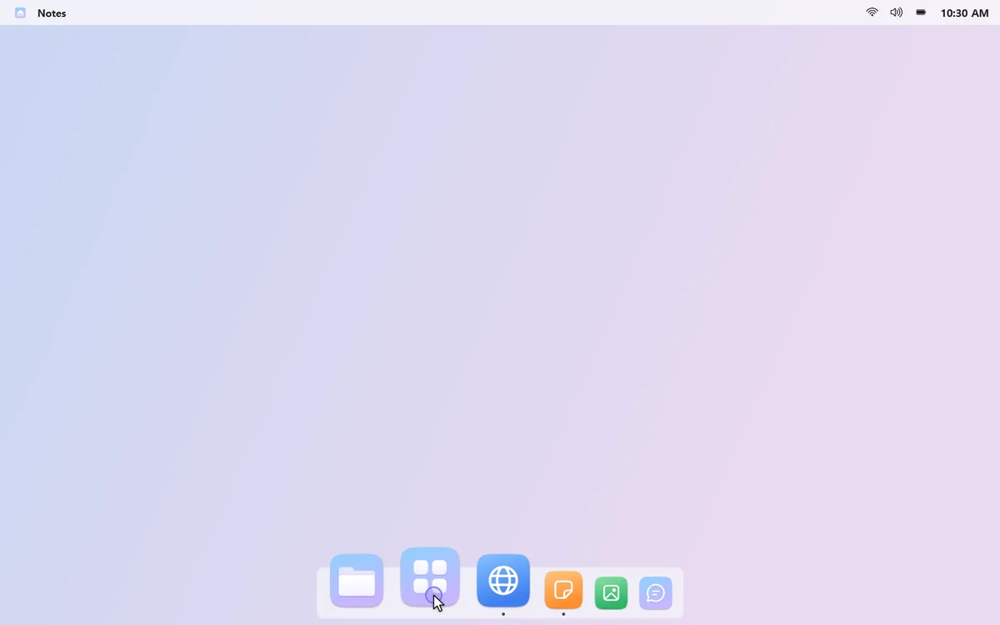
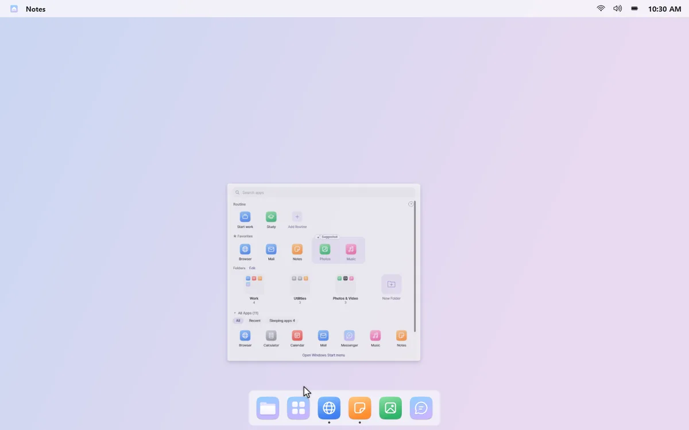
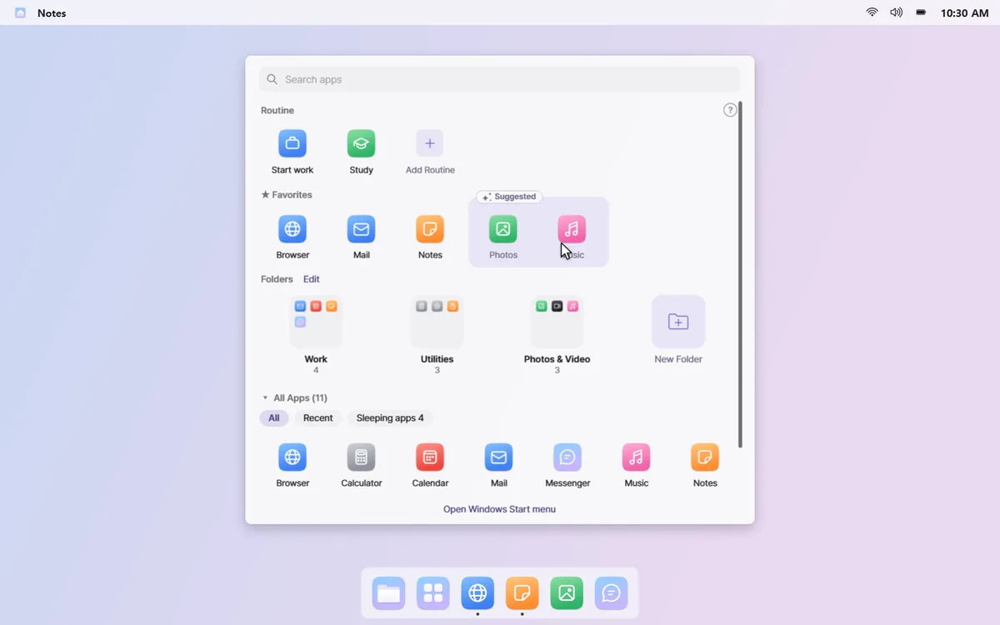
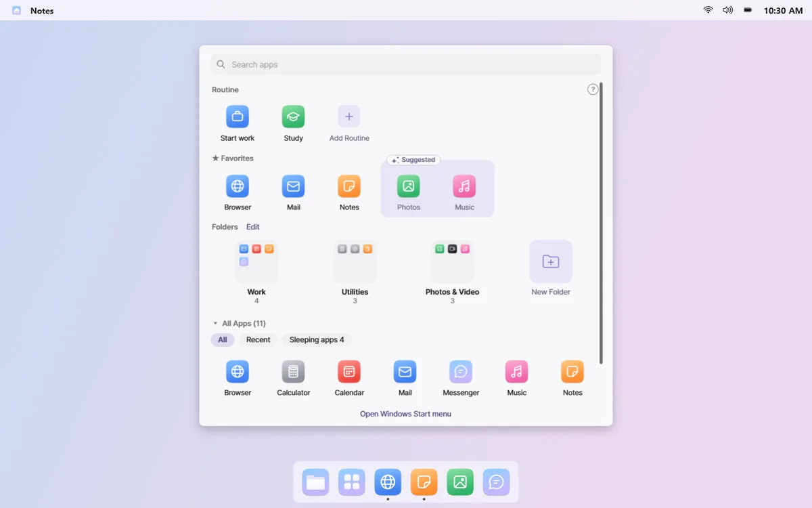
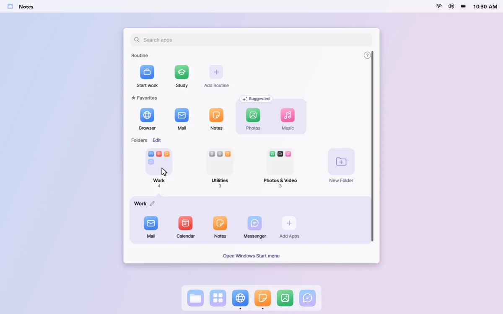
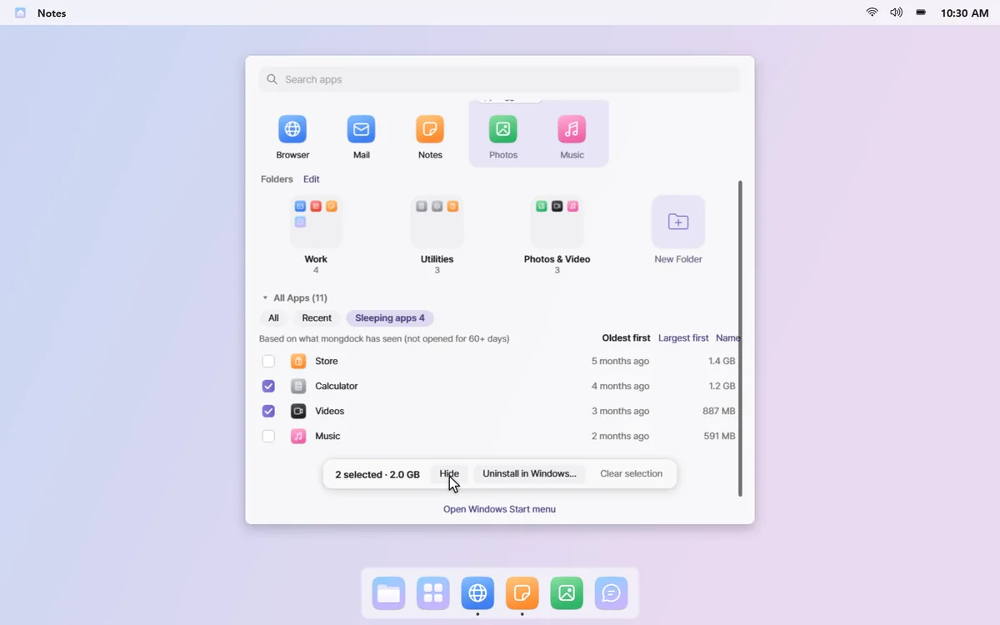

Keep the apps you use up front
Click All Apps in the Dock, and a panel opens in the middle of the screen. Favorites, folders of the apps you use, and every app are already sorted and ready.
Apps you forgot about · Apps you installed once and never opened keep piling up.
Start typing right away
The panel doesn't take over your screen, and the search box is ready the moment it opens. Your routines sit in the top row, one click away.



Favorites, plus a few suggestions
Pin the apps you open most to the Favorites row. Apps you've opened often lately show up as dotted suggestions; click + to add them.

Folders that hold only what you use
Apps are sorted into folders like Work, Social, and Games, and each one holds only apps you've used recently. Rename and reorder folders with a click in edit mode.

Clear out sleeping apps
See “sleeping apps,” the ones you haven't opened in over 60 days, along with how much space they take. Hide them from the panel, or pick a few to uninstall through Windows.

The app history behind suggestions and folders stays on your PC. Right-click an empty spot in the panel and turn off “Remember apps I use” to stop and clear it. Read the privacy policy
Good to know
- Uninstalling sleeping apps opens each app's Windows uninstaller in turn. mongdock doesn't remove anything itself, and apps that can't be removed this way are marked in the list.